Realizamos el primer análisis para la imágen reconstruida del telescopio GTC por el Dr. Luis Artemio. Como siempre, empezamos por determinar los parámetros iniciales que esten en el header de la imágen:
MAG_ZEROPOINT |
$29.28$ |
SEEING_FWHM |
$1.12$ |
SATURATE |
$49974.00$ |
GAIN |
$45.8366$ |
Además, el filtro de convolución que usaremos sera de gauss_3.0_7x7.conv, con estos parámetros empezaremos a hacer el análisis inicial para obtener un catálogo con el cual modelar la PSF. Como siempre, empezaremos por determinar el BACKGROUND
BACKGROUND.
Usando los parámetros por defecto BACK_SIZE=64 y BACK_FILTERSIZE=3, obtenemos lo siguiente:


THRESHOLD.
Ahora vamos a determinar el nivel de umbral para la detección de fuentes, para ello emplearemos la imagen con los datos invertidos.
DETECT_THRESH,ANALYSIS_THRESH |
Objetos detectados | Objetos extraidos |
|---|---|---|
| $1.5$ | $6531$ | $4503$ |
| $2.0$ | $1529$ | $1121$ |
| $2.5$ | $645$ | $532$ |
| $3.0$ | $457$ | $400$ |
Podemos notar que para un umbral de $2.5$, los objetos detectados disminuyen drasticamente en comparación con los 6531 con un umbral de $1.5$.


DEBLENDING.
Entonces, usando este nivel de umbral con un mínimo de 5 píxeles juntos para detectar objetos, podemos pasar al proceso de deblending con los parámetros DEBLEND_NTHRESH=32 y DEBLEND_MINCONT con valores de $0.001, 0.005, 0.01, 0.05$.
| Valor | Objetos detectados | Objetos extraidos |
|---|---|---|
| $0.001$ | $23739$ | $20989$ |
| $0.005$ | $23289$ | $20631$ |
| $0.01$ | $23089$ | $20489$ |
| $0.05$ | $22549$ | $19976$ |


Para obtener un modelo de PSF bastante bueno, tratamos de obtener una muestra de "estrellas" aplicando distintos filtros, con el objetivo de que PSFEx modele la PSF únicamente en "estrellas". Para esto, empleamos un modelo de RandomForest en donde se encontró que los parámetros más influyentes en la clasificación son MU_MAX,MAG_AUTO,CLASS_STAR y FLAGS. [12]
Implementación de RanfomForest.
Metodología general.Generamos un catálogo con los siguientes parámetros:
X_IMAGE
Y_IMAGE
ALPHA_J2000
DELTA_J2000
CLASS_STAR
ELLIPTICITY
FWHM_IMAGE
MAG_AUTO
MU_MAX
FLAGS
FLUX_RADIUS
Este catálogo se comparó con el DR3 parte 1 de GAIA, todo esto sin aplicar filtros, tomando solo las coincidencias con GAIA se construyo una nueva columna target, el cual toma valores de $1$ para objetos que coincidian con el catálogo de GAIA (en principio, estrellas) y $0$ para aquellos que no coinciden. Se eliminaron outliers, objetos con MAG_AUTO=99 y FWHM>100, de donde obtenemos un dataset claramente desbalanceado, por ello se optó por un modelo de RandomForest de SciKit Learn de Python para entrenar una clasificación binaria. Se usó KFolds para disminuir el sesgo que este desbalance introduce, mediante validación cruzada, con 5 folds. Se calcularon las importancias de cada atributo para ver cuál era el que más influenciaba en la clasificación estrella/galaxia y se usó un modelo de DecisionTree, también de Scikit Learn para aproximar un umbral para uno o varios parámetros.
De 51,172 objetos, 50,574 tenían target 0 y 598 target 1. Como primer vistazo preliminar se analizó la matriz de covarianzas de todas las variables contra todas, pero la más relevante va a ser es la covarianza con el target.
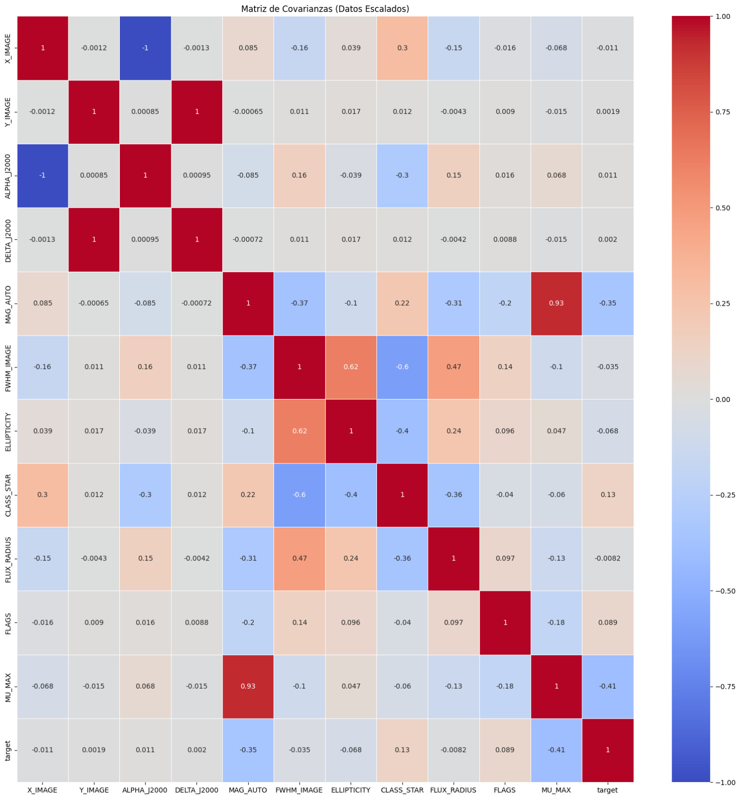
Desde un inicio se puede ver que las variables que más correlación tienen con el target son MU MAX, MAG AUTO, CLASS STAR y FLAGS. Esto confirma que algunas variables que ya se habían tomado en cuenta para criterios anteriores son relevantes, mientras que descarta otras como FWHM IMAGE, que tiene la correlación más baja de las variables que se consideraron. Luego, tras entrenar el modelo de Scikit Learn RandomForest y usar validación cruzada con 5 folds se obtienen las siguientes métricas de evaluación:
target |
precision | recall | f1-score | support |
|---|---|---|---|---|
| 0 | 0.9976 | 0.9985 | 0.9981 | 50481 |
| 1 | 0.8226 | 0.7500 | 0.7846 | 476 |
Las métricas para la clase estrella son aceptables, dado el gran desbalance que hay. En la matriz de confusión vemos que esta baja en el desempeño se debe a que el modelo suele cometer errores de falsos negativos: objetos clasificados como galaxias que en realidad son estrellas.
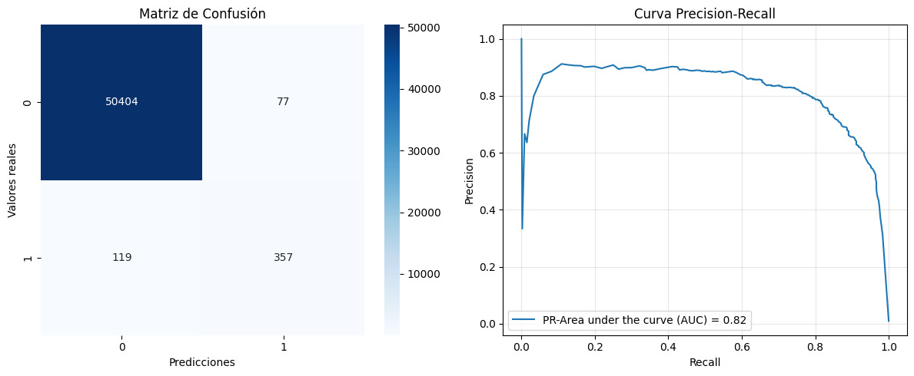
Respecto a las importancias, como vimos en la matriz de covariancias, MU_MAX adquiere una importancia muy alta, lo que motiva a incluirla en el criterio preliminar.
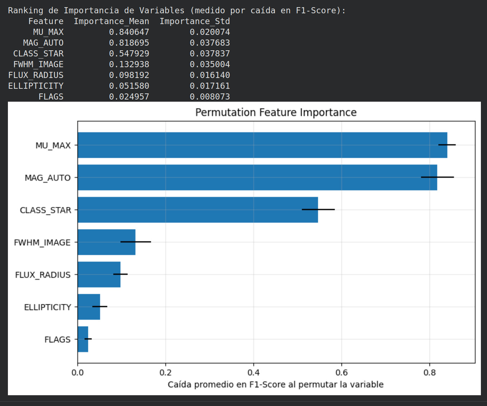
La importancia se calculó al aleatorizar la variable de forma aislada y ver qué tanto caía el F1-score, que toma en cuenta falsos positivos y negativos. Si el F1-score se desploma, la variable es de suma relevancia. Si no, es más prescindible. La barra negra representa cuánto varió la importancia tras hacer este ejercicio 10 veces.
Ahora, para encontrar su umbral, se entrenó un DecisionTree, admitiendo una pureza con índice gini de hasta $0.3$. Se pensaba encontrar el umbral de más variables, pero para DecisionTree bastaba con MU_MAX para llegar al nivel de pureza requerido. Aumentar o disminuir la pureza, así como permitir más ramificaciones, no brindan más umbrales.
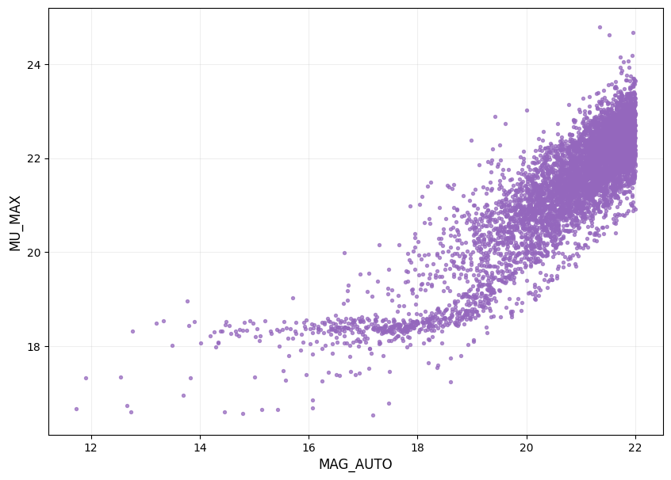
MU_MAX en función de MAG_AUTO.
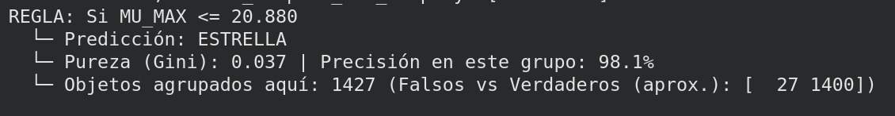
MU_MAX.
Al comparar con GAIA, se obtienen $359/620$ coincidencias.
Resultados mosaico reconstruido GTC.
Como en el caso de Subaru, tenemos un dataset desbalanceado, $20045$ objetos que no están en GAIA DR3, identificados como galaxias (target 0) y $524$ objetos que sí están en GAIA, identificados como estrellas (target 1). Cabe aclarar que, dado que el límite de magnitudes de GAIA está alrededor de 22, el modelo, así como el criterio, se sesga hacia las magnitudes más brillantes. Hasta el momento, no podemos asegurar que no hay objetos puntuales con magnitudes más tenues en el conjunto de target 0. Por lo que, con esto en cuenta, solo vamos a trabajar con objetos puntuales con magnitudes mayores a $22$.
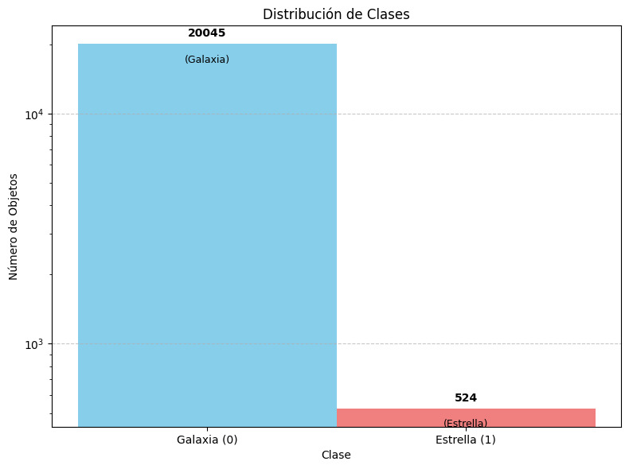
target$=1$) y galaxias ( target$=0$).
Antes de entrenar, analizamos la matriz de covarianza para ver un anticipo de cuáles son los parámetros de salida más correlacionados con el target.
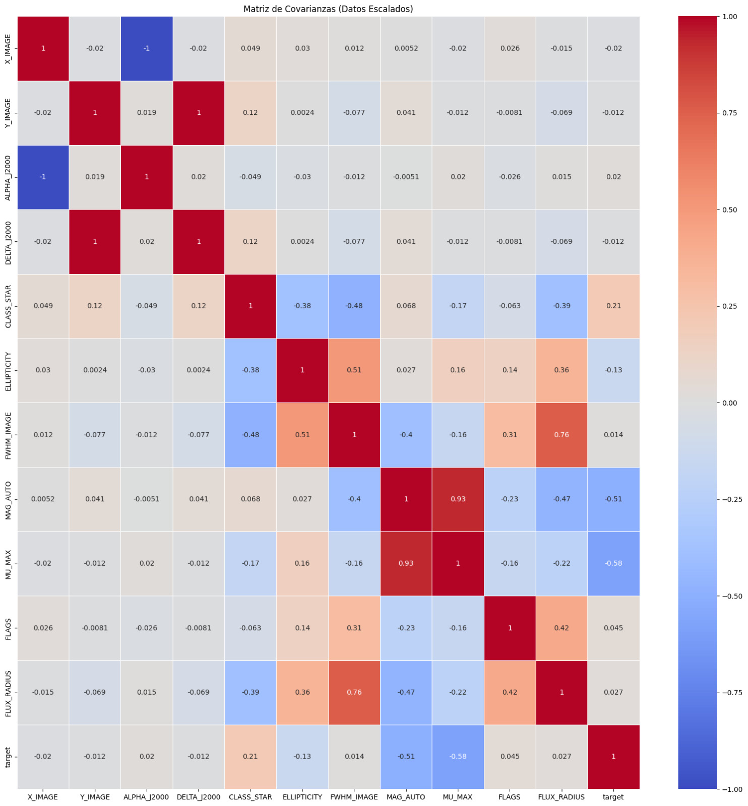
Como vemos, los parámetros que más relación tienen son, en orden,MU_MAX, MAG_AUTO, CLASS_STAR y ELLIPTICITY. Ahora, entrenamos de la misma forma y obtenemos las métricas:
target |
precision | recall | f1-score | support |
|---|---|---|---|---|
| 0 | 0.9972 | 0.9987 | 0.9979 | 20045 |
| 1 | 0.9473 | 0.8912 | 0.9184 | 524 |
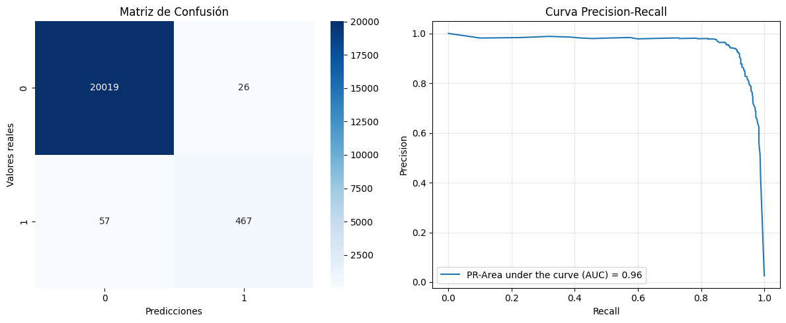
A comparación de las métricas en la imagen de Subaru, en la clase minoritaria el modelo mejora muchísimo, lo que se aprecia mejor en la matriz de confusión y el la curva Precision-Recall, así como su área.
En el caso de subaru, se tenían $119$ falsos negativos (cuadrante inferior izquierdo) y $77$ falsos positivos (superior derecho). En el caso del mosaico, esto mejora notablemente. Además, el área bajo la curva, una métrica que evalúa el desempeño únicamente en la clase minoritaria, de $0.82$ en el caso de Subaru, pasa a $0.96$. Respecto a las importancias, el ranking se mantiene casi igual pero a MU_MAX se le asigna una importancia más marcada y un umbral distinto
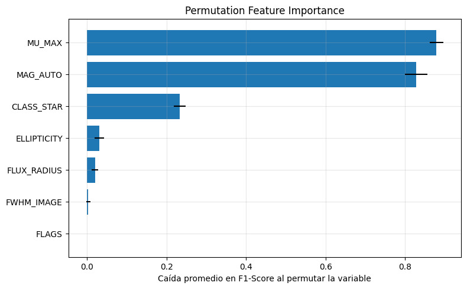
Ahora, para determinar el umbral, se realiza un entrenamiento con árbol de decisión y este toma a MU_MAX como su principal factor de distinción, considerando una pureza de índice gini mínimo $0.3$. La hoja más pura de este árbol toma un umbral de $22.421$.
REGLA: Si MU_MAX <= 22.421
└─ Predicción: ESTRELLA
└─ Pureza (Gini): 0.056 | Precisión en este grupo: 97.1%
└─ Objetos agrupados aquí: 1106 (Falsos vs Verdaderos (aprox.): [ 32 1074])
Con ello, vemos que el criterio preliminar de objeto puntual se mantiene, con ligeras variaciones en sus umbrales. Esto sugiere que los umbrales no serán absolutos, sino que tendrán ligeras dependencias en la imagen: cómo se haya sustraido el fondo, los parámetros de extracción, de deblending, el filtro, etc. Además, a diferencia de la imagen de Subaru, mantener CLASS_STAR en $0.85$ no aporta demasiados objetos más que coincidan con GAIA, así que se propone el criterio preliminar
17< MAG_AUTO< 22 && ELLIPTICITY< 0.3 && CLASS_STAR>0.9 && FLAGS< 5 && MU_MAX< 22.4
Aunado a lo anterior, después de aplicar este filtro obtenido usando RandomForest con un umbral a MU_MAX, vamos a aplicar el código mencionado antes para obtener fuentes puntuales aisladas, recordando que el objetivo de esta parte es obtener un catálogo para que PSFEx obtenga un modelo de PSF basado lo mejor posible en puras "estrellas".
El catálogo obtenido con los umbrales definidos anteriormente para la imágen del mosaico GTC nos dió 528 objetos de 20631, a continuación se presentan las variaciones aplicando los filtros para aislar los objetos:
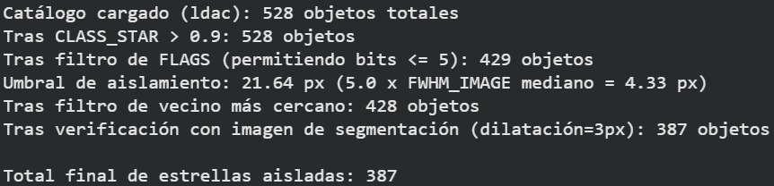
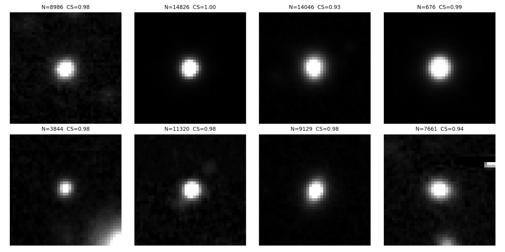
Con este catálogo de $387$ estrellas aisladas, obtenemos nuestro modelo PSF, del cual obtenemos las siguientes métricas:
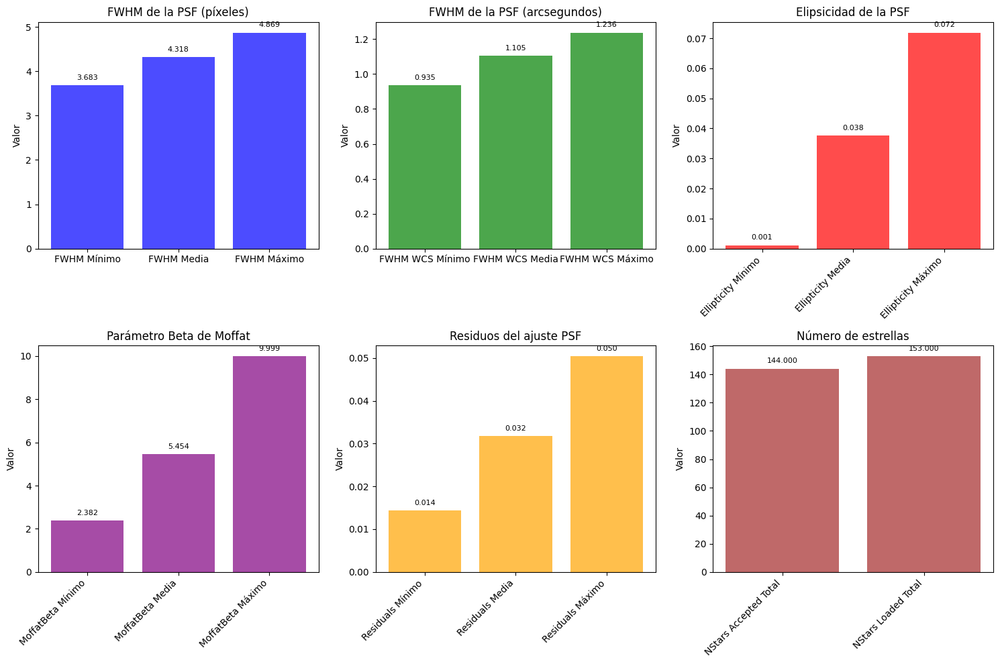
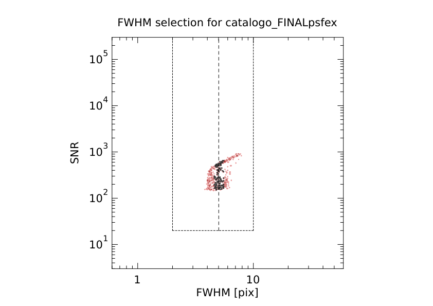
Finalmente, inyectamos este modelo PSF a SExtractor y pedimos los parámetros de SPREAD_MODEL, SPREADERR_MODEL y CLASS_STAR, con esto, comparamos la cantidad de estrellas, que cumplan un definido umbral, con las dadas en un catálogo distinto.
| Umbral | Coincidencias | Total de objetos |
|---|---|---|
| SPREAD_MODEL+SPREADERR_MODEL< 0.005, CLASS_STAR> 0.9, MAG_PSF< 23 | 84/123 | 564 |
| SPREAD_MODEL+SPREADERR_MODEL< 0.002, CLASS_STAR> 0.95, MAG_PSF< 23 | 67/123 | 436 |
| SPREAD_MODEL+SPREADERR_MODEL< 0.005, CLASS_STAR> 0.9, MAG_PSF< 23, MU_MAX< 22.5 | 77/123 | 485 |
| MU_MAX< 22.4, MAG_PSF< 23 | 82/123 | 1109 |
Para la imágen de SUBARU al aplicar el filtro de MU_MAX obtenemos un catálogo de $459$ objetos, para luego obtener un catálogo con los objetos aislados con un total de $353$ objetos.
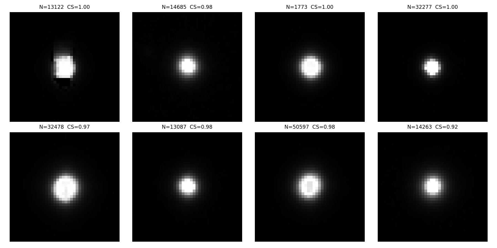
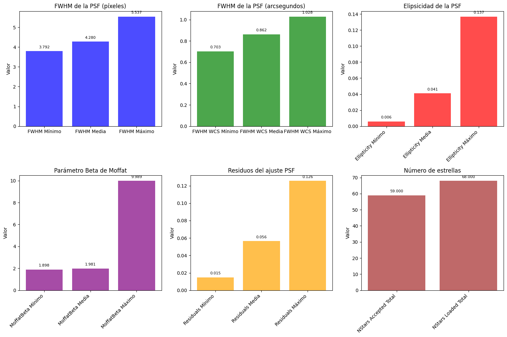
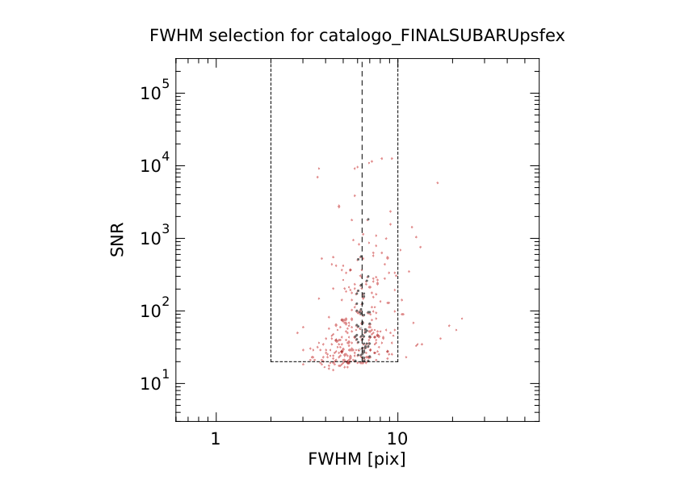